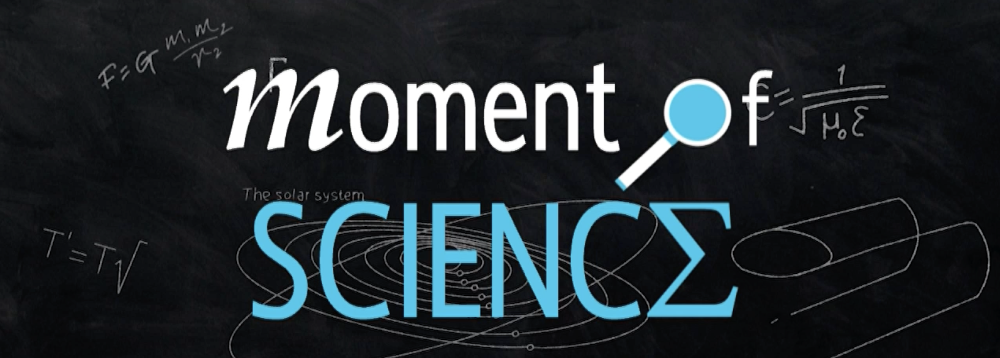

Feature on a Moment of Science

Results from Whitaker et al. 2021, published in Nature, were recently featured on the weekly science segment - Moment of Science, produced by Meteorologist Dan Smith for the local ABC News Station. I had the opportunity to talk to Dan, based in Toledo Ohio, from the comfort of my home last month about our findings that early dead galaxies seem to be running on empty with very little fuel supply. The show just aired, check it out!